12.31.2009 12:13
IOOS data interchange standardization
It looks like there is some source
code available from the Data
Integration Framework page... e.g. XeniaSOS, which
I
mentioned back in Feb 2009.
Nation's Ocean Observing System Completes Year-Long Data Standardization - Water & Weather Data Clear and Consistent Across All U.S. Regions [NOAA]
Nation's Ocean Observing System Completes Year-Long Data Standardization - Water & Weather Data Clear and Consistent Across All U.S. Regions [NOAA]
... Conducted by NOAA, other federal agencies and 11 independent regional associations of ocean observing partners, this year-long project to ensure consistent standards and Web services for various data sets are available via the U.S. Integrated Ocean Observing System (IOOS)-a system designed to enhance America's ability to collect, deliver, and use ocean information. ...
12.29.2009 17:57
AIS and the AK grounding last week
Investigation
into tugboat grounding on Bligh Reef begins - BLIGH REEF: Coast
Guard has little to say about the accident. [Anchorage Daily
News]
... The Coast Guard's Vessel Traffic Service in Valdez monitors vessels in the area. It does so primarily with two systems: a standard radar and a second Automatic Identification System, which is a locating device carried by larger vessels. The idea is that if one system goes down, the other is there for backup, said Stan Stephens, a longtime tour operator in the area who also sits on the Prince William Sound Regional Citizens' Advisory Council, a watchdog group set up after the tanker Exxon Valdez spilled an estimated 11 million gallons of crude oil, the nation's worst tanker spill. The Pathfinder was required to have an AIS, Christensen said. But the Coast Guard would not say whether the Pathfinder was being actively monitored on Dec. 23. ...Should be interesting to pull the feed to see what happened on that day.
12.28.2009 13:18
Ship noise measurement
First
Non-Military Standard, Underwater Noise
A new voluntary consensus standard for the measurement of underwater noise from ships is now available from the Acoustical Society of America (ASA) and the American National Standards Institute (ANSI). The new standard will be known as ANSI/ASA S12.64-2009/Part 1, "American National Standard, Quantities and Procedures for Description and Measurement of Underwater Sound from Ships- Part 1: General Requirements". ...Val Schmidt from CCOM participated in the standards working group for this.
12.26.2009 21:27
A Hydrographic Office
Was looking to see if I could find an
introduction to hydrographic surveying or ocean mapping on youtube.
There doesn't seem to be anything good, but I did find this promo
video for a hydrographic office (HO) that shows a good cross
section of things that go on in a HO.
12.25.2009 21:55
Fledermaus midwater column visualization of UNH fish cages
The UNH fish cages off of the Isle of
Shoals in NH. Visualized in Fledermaus by IVS3D. Midwater visualization based off
of research done in GeoZui4D. Water column
data can provide "as built" documentation and performance metrics
for underwater structures.
Update 2011-Jan-13: The above video was featured on Hydro International: Fish Cages in Fledermaus on 2010-Dec-22. Thanks to Liz and Phil for the pointer.
The GuiZui4D video from 2007:
Update 2011-Jan-13: The above video was featured on Hydro International: Fish Cages in Fledermaus on 2010-Dec-22. Thanks to Liz and Phil for the pointer.
The GuiZui4D video from 2007:
12.25.2009 07:03
Grounding in the same place as Exxon Valdez
Tug hits reef struck by Exxon Valdez
A tugboat put in service to help prevent another oil spill disaster in Prince William Sound ran aground on the same reef as the Exxon Valdez 20 years ago in what remains the nation's worst oil spill. The Coast Guard said Thursday that the 136-foot tug with six crew aboard had just completed an ice survey and was heading back to port in Valdez when it grounded on Bligh Reef. The tug reported the grounding in a radio call at 6:15 p.m. Wednesday. ...
12.24.2009 18:19
Rolling deck 2 Repository (R2R)
A lot of people asked me at AGU if my
BAG work was a part of R2R. While NOAA is collecting the R2R
products at NGDC and NOAA ships also send data to NGDC (well, the
Office of Coast Survey does - but, fisheries does not send their
ME70 data), I am not doing anything with R2R. The R2R folks know
me, saw my presentation at AGU, and are more than welcome to use my
code.
I didn't get enough time at AGU talking to the R2R folks, but I got some. I have been looking through their web site. I hope they start publishing the formats for data submission so that others can use them.
Looking at a Healy cruise HLY0905 inventory to see what they have got, it's not clear how to get at the data. Bummer that they are not using an XML format. Also, I presume those are md5 sums, but it doesn't state anything other than a "checksum".
R2R looks like a great opportunity to unify data streams.
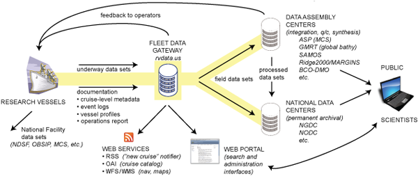
I didn't get enough time at AGU talking to the R2R folks, but I got some. I have been looking through their web site. I hope they start publishing the formats for data submission so that others can use them.
Looking at a Healy cruise HLY0905 inventory to see what they have got, it's not clear how to get at the data. Bummer that they are not using an XML format. Also, I presume those are md5 sums, but it doesn't state anything other than a "checksum".
HLY0905 | 00057 | 25d5b783bae1281d3d653b78d62f8230 | 16218515 | hly0905/1_Minute_Averaged_Data/HLY0905_Averaged.csv HLY0905 | 00057 | 12bf277d9b1fca170ace13ad6f9e8a2d | 27344873 | hly0905/1_Minute_Averaged_Data/HLY0905_Averaged.dbf HLY0905 | 00057 | 11cfd76f0e4f767f648baa5c2a5f0377 | 5141588 | hly0905/1_Minute_Averaged_Data/HLY0905_Averaged.shp HLY0905 | 00057 | f052d3fdffcc598e3b112eed2dfd2f32 | 467508 | hly0905/1_Minute_Averaged_Data/HLY0905_Averaged.shx HLY0905 | 00057 | e5774e51ee9b36cf6564af67c3fb7b7c | 4689829 | hly0905/1_Minute_Averaged_Data/hly0905_distance.csv HLY0905 | 00057 | 8241606880c48c88cb10557592129a6c | 786312646 | hly0905/AloftConn_movies/hly0905_aloftconn_A.mov HLY0905 | 00057 | 8803865637d63e2fc267e47c32b3f891 | 1167538904 | hly0905/AloftConn_movies/hly0905_aloftconn_B.mov HLY0905 | 00057 | 517365c49118f66e01482590700e6dde | 47251868 | hly0905/hly0905_processed_seabeam/2009-eventlog shows that we could use a bit more info on the formats. Does "plain text, digital file" mean XML or CSV?
R2R looks like a great opportunity to unify data streams.
12.24.2009 09:17
Fink mapserver/geos
I have just done some updating for
fink. I now have mapserver5 building on 10.6. gdal and shapely now
using libgeos3 3.2.0. The libgeos3 still got some serious problems
with how it builds libraries, but we are still able to limp along
with packaging.
You will likely have to use apt-get to get the updates to go. Or you may have to remove shapely-py and gdal, update libgeos3* and then install the new gdal and shapely versions. Fink will prompt you with the apt-get commands you need.
Also updated is pylint.
You will likely have to use apt-get to get the updates to go. Or you may have to remove shapely-py and gdal, update libgeos3* and then install the new gdal and shapely versions. Fink will prompt you with the apt-get commands you need.
Also updated is pylint.
12.20.2009 23:47
database filtering with shapely
When not using PostGIS or SpatialLite
(or another spatial db), you have to do filtering of points. Today,
I wanted to drop all the rows from the database that were not
within a polygon. I'm sure this can be written in a better form,
but it works:
#!/usr/bin/env python
from shapely.geometry import Polygon,Point
import sqlite3
area = Polygon(( (-75.04282375786718,38.43809074569604),
(-74.95796038123665,38.44102042608007), (-74.94823032303307,38.64496780559742),
(-74.98940280875983,38.77078838823093), (-75.04000276399186,38.87945317094139),
(-75.17254471352614,39.05947158636056), (-75.27890489578456,39.22690584289197),
(-75.40273240772274,39.33958192923748), (-75.48446139154538,39.38575022705258),
(-75.52815268555506,39.43188933981689), (-75.554652567733,39.47595050434606),
(-75.6072584927562,39.44816210957681), (-75.44439245681477,39.24926918128994),
(-75.42646149407051,39.11998312534694), (-75.40876947833023,39.00435085478392),
(-75.34251898512647,38.94179443498852), (-75.23133088017433,38.78501595331532),
(-75.15414556655479,38.63440794663666), (-75.09618869312195,38.44710114662649),
))
cx = sqlite3.connect('ais.db3')
cx.row_factory = sqlite3.Row # Allow access of fields by name
outside = 0
cu = cx.cursor()
for i,row in enumerate(cx.execute('SELECT key, longitude AS x,latitude AS y FROM position;')):
pt = Point(row['x'],row['y'])
if not area.contains(pt):
outside += 1
cu.execute('DELETE FROM position WHERE key=%d;' % row['key'])
if outside % 1000 == 1:
cx.commit()
cx.commit()
Pretty basic stuff, but it gets the job done.12.18.2009 13:52
first steps in giving MB-System an autoconf build system
Dale and I (with lots of help from
#fink IRC) are working on autoconf for MB-System. We are starting
with just the mbio subdirectory to see if we can build libmbio.a. I
started out with this little autogen.sh script:
Now we need a Makefile.am to build our makefile:
Now we have all the pieces, so let build the world...
The above was using these versions of the tools:
For future work, we will have to go back into the code and change the architecture detecting flags into autoconf feature detecting flags.
Trackback: Dale wrote "autoconfsicating" MB-System [LDEO Instrument Laboratory]
#!/bin/bash rm -rf aclocal.m4 autom4te.cache configure set -x # Turn on Debugging aclocal autoconf automake --add-missingI was quickly told that I don't need that and that I can just do:
autoreconf -fviThen I went to the mbio subdirectory and ran
autoscanThis generates a basic template to start working with:
# -*- Autoconf -*- # Process this file with autoconf to produce a configure script. AC_PREREQ([2.63]) AC_INIT([FULL-PACKAGE-NAME], [VERSION], [BUG-REPORT-ADDRESS]) AC_CONFIG_SRCDIR([mb_absorption.c]) AC_CONFIG_HEADERS([config.h]) # Checks for programs. AC_PROG_CC # Checks for libraries. # Checks for header files. AC_CHECK_HEADERS([stdlib.h string.h unistd.h]) # Checks for typedefs, structures, and compiler characteristics. AC_TYPE_SIZE_T AC_HEADER_STDBOOL # Checks for library functions. AC_FUNC_MALLOC AC_FUNC_REALLOC AC_CHECK_FUNCS([floor getcwd gethostname memmove memset pow rint sqrt strchr strrchr strstr strtol]) AC_OUTPUTCopy that file to configure.ac (configure.in is a less prefered name, but will work too). With the help of fangism and pogma, we made these changes:
- Edit AC_INIT to have the name of the package, version number, and an email address
- Comment out the AC_CONFIG_SRCDIR... don't know what that line does
- Add AM_INIT_AUTOMAKE([foreign]) to tell it to build a makefile
- Same boes for the AC_CONFIG_FILES([Makefile])
- I was trying to build a library, and it needs to know about RANLIB, so tell it to go look for ranlib
- AC_PROB_LIBTOOL is old. Use LT_INIT to tell it to use libtool so we can build libraries
- Turn off the MALLOC lines as those are not helpful. We don't care what malloc(0) does
# -*- Autoconf -*- # Process this file with autoconf to produce a configure script. AC_PREREQ([2.63]) AC_INIT([mbio], [5.1.3], [dave@mbari.org]) AC_CONFIG_HEADERS([config.h]) #AM_INIT_AUTOMAKE AM_INIT_AUTOMAKE([foreign]) AC_CONFIG_FILES([Makefile]) AC_PROG_RANLIB # Checks for programs. AC_PROG_CC # Checks for libraries. dnl libtool setup LT_INIT # Checks for header files. AC_CHECK_HEADERS([stdlib.h string.h unistd.h]) # Checks for typedefs, structures, and compiler characteristics. AC_TYPE_SIZE_T AC_HEADER_STDBOOL # Checks for library functions. AC_CHECK_FUNCS([floor getcwd gethostname memmove memset pow rint sqrt strchr strrchr strstr strtol]) AC_OUTPUT
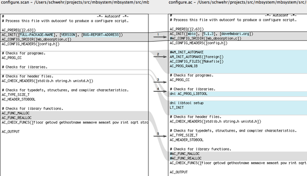
Now we need a Makefile.am to build our makefile:
lib_LIBRARIES = libmbio.a libmbio_a_SOURCES = *.cThis tells it that we want to build libmbio.a, a static library (not a shared lib) and that all the C source files in this directory go into the shared library.
Now we have all the pieces, so let build the world...
autoreconf -fvi ./configure --prefix=/tmp/foo checking for a BSD-compatible install... /usr/bin/install -c checking whether build environment is sane... yes checking for a thread-safe mkdir -p... ./install-sh -c -d checking for gawk... gawk checking whether make sets $(MAKE)... yes checking for ranlib... ranlib checking for gcc... gcc checking for C compiler default output file name... a.out ... checking for strtol... yes configure: creating ./config.status config.status: creating Makefile config.status: creating config.h config.status: config.h is unchanged config.status: executing depfiles commands make make all-am gcc -DHAVE_CONFIG_H -I. -g -O2 -MT *.o -MD -MP -MF .deps/*.Tpo -c -o *.o mb_absorption.c mb_absorption.c:107:37: error: ../../include/mb_status.h: No such file or directory mb_absorption.c:108:37: error: ../../include/mb_define.h: No such file or directory mb_absorption.c: In function 'mb_absorption': mb_absorption.c:117: error: 'MB_SUCCESS' undeclared (first use in this function) mb_absorption.c:117: error: (Each undeclared identifier is reported only once mb_absorption.c:117: error: for each function it appears in.) mb_absorption.c:180: error: 'MB_ERROR_NO_ERROR' undeclared (first use in this function) make[1]: *** [*.o] Error 1 make: *** [all] Error 2David Fang has some good notes on autoconf: Open Source Projects and Programs. Especially: hello-autotools-0.1.tar.bz2 and AutoBook/Goat Book
The above was using these versions of the tools:
fink list -i automake autoconf libtool | egrep -v 'shlib|automaken' i autoconf 1:2.63-3 System for generating configure scripts i automake1.11 1.11.1-1 GNU Standards-compliant Makefile generator i libtool14 1.5.26-3 Shared library build helper, v1.5
For future work, we will have to go back into the code and change the architecture detecting flags into autoconf feature detecting flags.
Trackback: Dale wrote "autoconfsicating" MB-System [LDEO Instrument Laboratory]
12.16.2009 07:14
AIS assisted collision
Thanks to Lee for this link about an
AIS assisted collision with the USN. Possibly the first "U.S. AIS
assisted collision". The article does not have any real details
about what really occured and the USS New Orleans may have been
running in Blue Force (encrypted) mode at the time (I haven't check
my AIS archive). Was the sub also broadcasting AIS?
Submariners Going 'Back to Basics'
Submariners Going 'Back to Basics'
... The Hartford's crew had been tracking the ship for 50 minutes before the accident occurred, Donnelly said. "There were a whole host of watch standers that failed to recognize the sensor data that was presented to them," he said. The crew was trying to force-fit the USS New Orleans' sonar contacts to automatic identification system signals that it was receiving from an out-bound ship on the same bearing, he explained. ...
12.15.2009 23:06
Building the base Google Earth demonstration of BAGs
I've now have all the scripts to the
point where I can run them through the whole dataset. I've got code
in the script to prevent images what have a width or a height
greater than 5000 cells, as I just don't have the time to get them
processed right now. I have 1400 bag files to go through before
Thursday. Here is the visualization as it looks right now:
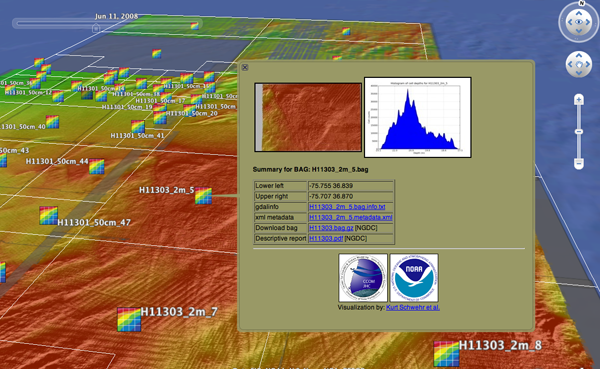
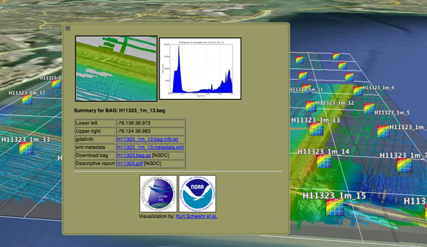
12.15.2009 14:05
Rounding in BAG metadata
Here is an excellent example of how
rounding can be a bad thing when representing numeric data in text
form. I have been creating bounding boxes of surveys, but some of
these surveys cover very small areas. Here is an except from a
gdalinfo (svn of pre 1.7.0) that shows the bag's extent in UTM.
gdalinfo H11301_50cm_23.bag Driver: BAG/Bathymetry Attributed Grid Files: H11301_50cm_23.bag Size is 2464, 1526 ... Origin = (427363.890000000013970,4078823.169999999925494) Pixel Size = (0.500000000000000,-0.500000000000000) ... Corner Coordinates: Upper Left ( 427363.890, 4078823.170) ( 75d48'53.20"W, 36d51'9.11"N) Lower Left ( 427363.890, 4078060.170) ( 75d48'52.93"W, 36d50'44.35"N) Upper Right ( 428595.890, 4078823.170) ( 75d48'3.45"W, 36d51'9.45"N) Lower Right ( 428595.890, 4078060.170) ( 75d48'3.19"W, 36d50'44.69"N) Center ( 427979.890, 4078441.670) ( 75d48'28.19"W, 36d50'56.90"N) ...And here is what I find in the metadata:
<smXML:EX_Extent>
<geographicElement>
<smXML:EX_GeographicBoundingBox>
<westBoundLongitude>-75.81</westBoundLongitude>
<eastBoundLongitude>-75.80</eastBoundLongitude>
<southBoundLatitude>36.85</southBoundLatitude>
<northBoundLatitude>36.85</northBoundLatitude>
</smXML:EX_GeographicBoundingBox>
</geographicElement>
</smXML:EX_Extent>
Notice how the North/South extents round to the same value, so I've
got a line for the bounding box.12.15.2009 13:09
AGU Virtual Globes session webcast
I haven't been able to hang out with
the Virtual Globes people yet at AGU... I'm off in a corner
processing data for Thursday to try to give the best presentation
possible. I've already missed out on some really great presentation
and posters AGU, which is frustrating.
Even if you are not here, you can check out some talks:
Virtual Globes at AGU... webcast! [Google Geo Developers Blog]
My machine is taking several minutes of CPU time to process a bag (18981P x 8422L) into a geotiff...
Even if you are not here, you can check out some talks:
Virtual Globes at AGU... webcast! [Google Geo Developers Blog]
My machine is taking several minutes of CPU time to process a bag (18981P x 8422L) into a geotiff...
PID COMMAND %CPU TIME #TH #WQ #POR #MRE RPRVT RSHRD RSIZE VPRVT 1658- gdalwarp 44.1 02:26.83 1/1 0 16 271+ 724M+ 464K 727M+ 742M-
12.14.2009 16:38
Date in BAG metadata
In working through a data type an
trying to use it, you often discover the design requirements that
were overlooked. With BAG's, I'd like to pull the date range for
the survey and make that the
KML TimeSpan. I pulled out the xml from one bag and decimated
it down to where I just have the time related fields:
<date>
<smXML:CI_Date>
<date>2008-03-10</date>
<dateType>creation</dateType>
</smXML:CI_Date>
</date>
<abstract>Project: OPR-O193-FA-07; Survey: H11334; State: Alaska;
General Locality: Rudyeard Bay; Sublocality: Eastern Rudyeard Bay ;
Date of Survey: 10/23/2004 - 11/06/2004; Surveyed by: NOAA Ship
Fairweather; Verification by: Pacific Hydrographic Branch</abstract>
<processStep>
<smXML:BAG_ProcessStep>
<description>Software: CARIS HIPS and SIPS; Version: 6.0; Method: Finalize; Parameters: Apply_Designated = YES</description>
<dateTime>2006-03-29T00:00:00Z</dateTime>
<processor>
<smXML:CI_ResponsibleParty>
<individualName>peter.holmberg</individualName>
<role>processor</role>
</smXML:CI_ResponsibleParty>
</processor>
<trackingId>-1</trackingId>
</smXML:BAG_ProcessStep>
</processStep>
<processStep>
<dateStamp>2008-03-10</dateStamp>
For starters, http://metadata.dgiwg.org/smXML
that is listed as the schema for the CI_Date is a broken link.
However, this is listed as the ISO 19115 reference data for the
feature. It's clear from the abstract that the reference data
should be from 2004. In my opinion, A hydrographic survey should
reference the date(s) that the sonar ensonified the bottom. The
CI_Date is 4 years later. There are also processing dateTimes and a
final dateStamp, but both of those are later. Perhaps the bag
metadata should be reqired to have a structure to represent a
machine readable survey collection date range(s). For this work, I
will just have to use the CI_Date, but that is not very
satifying.12.13.2009 16:34
SF tourism
For a little contrast from BAG
visualization...
We took a day off from work today and the whole family was up in SF starting with brunch at Mama's. Worth the 1 hour wait.
We tried all sorts of Teas.
The Fortune Cookie factory was neat, but wow, the fortunes were cheesy.
We took a day off from work today and the whole family was up in SF starting with brunch at Mama's. Worth the 1 hour wait.
We tried all sorts of Teas.
The Fortune Cookie factory was neat, but wow, the fortunes were cheesy.
12.13.2009 08:47
BAGs in Google Earth, a bit more progress
I am getting a lot closer to having
the final product for AGU... I have a popup, a nice icon by
Colleen, a bounding box, and a gdal tiled image.
I still have a number of issues to resolve. I gave a bit of work on troubles with transparency, but I have shelved the issue and will just live with the large gray semitransparent areas for now.
A bigger problem is that gdaldem hillshade crashes on large images:
And a close up:
This is by no means the largest bag. These bags have large empty border areas, but even if those are removed, these grids are large.
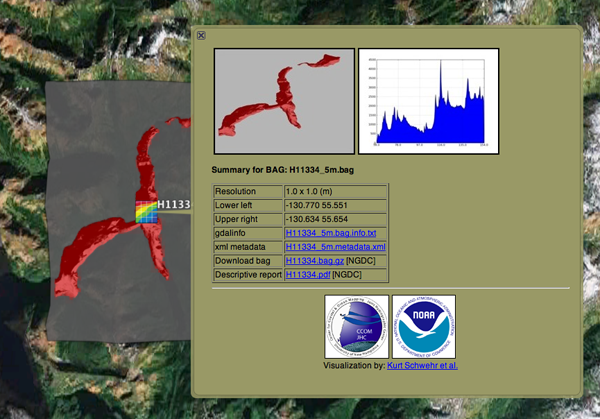
I still have a number of issues to resolve. I gave a bit of work on troubles with transparency, but I have shelved the issue and will just live with the large gray semitransparent areas for now.
A bigger problem is that gdaldem hillshade crashes on large images:
composite -blend 50 H11335_0_80m-hillshade.tif H11335_0_80m-color-relief.tif H11335_0_80m-blend.tif composite(3284) malloc: *** mmap(size=2557730816) failed (error code=12) *** error: can't allocate region *** set a breakpoint in malloc_error_break to debug composite(3284) malloc: *** mmap(size=2557730816) failed (error code=12) *** error: can't allocate region *** set a breakpoint in malloc_error_break to debugThat geotiff is 18981x8422. Here is the color relief of the bag in question:
And a close up:
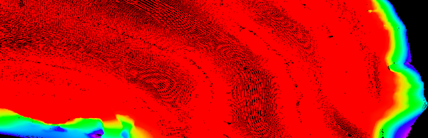
This is by no means the largest bag. These bags have large empty border areas, but even if those are removed, these grids are large.
12.13.2009 06:57
ipython and bpython
The bpython shell looks pretty cool.
Now if I could just find some time to package it for fink... and
this article also points to some really nice features in ipython
that I do not do a good job of taking advantage of.
Using bpython shell with django (and some Ipython features you should know)
Using bpython shell with django (and some Ipython features you should know)
... But I already use Ipython You do? So do I. In fact, I am a Power Ipython user, I use all kinds of %magic functions: %whos, %logstart, %bookmark, %ed and sometimes use Ipython as an alternative even to bash: %cd, %ls, %ll. And even for doc testing: %doctest_mode, copy-pasting %hist -n or running some code module in the interpreter namespace: %run -i and searching code %psearch. You can also give any arbitrary bash(or your default shell) command by escaping it with !. Oh, ?, ?? and / are of course the starters. ...
12.12.2009 13:18
Glider crossing the Atlantic
Very dramatic clip:
Thanks to the Myche News Network for letting me know about this video.
Thanks to the Myche News Network for letting me know about this video.
12.12.2009 06:58
Dexter
Dexter the Hamster passed away this
last week. He had a good two year run of it that involved, well, a
lot of running.
In his honor and thanks to Vince: HampsterDance classics
In his honor and thanks to Vince: HampsterDance classics
12.09.2009 16:01
Rough cut of KML popup for BAGs
This is really ugly, but it gets the
idea across. The KML and HTML are far from pretty. The code is
train of throught and undocumented. It's still missing a lot of
features including links, percent of the grid that has data, who
created the bag (e.g. which NOAA contractor), and the bag cell size
and count. The links will likely include: the orignal BAG and
related descriptive report (DR) on the NGDC server, the gdalinfo
dump, and the complete xml document.
Here is the KML template file as it stands right now (using the Python 2.6 format style):
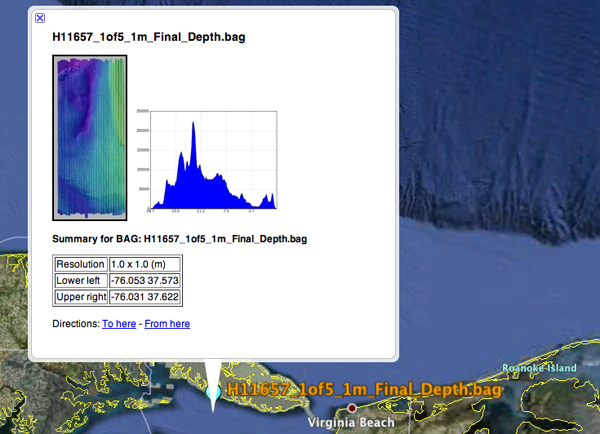
Here is the KML template file as it stands right now (using the Python 2.6 format style):
<?xml version="1.0" encoding="UTF-8"?>
<kml xmlns="http://earth.google.com/kml/2.1">
<Document>
<name>{bag}</name>
<Placemark>
<name>{bag}</name>
<description>
<![CDATA[
<img src="{thumb}"/> <img width="200" src="{histogram}"/> <!-- link to a full image -->
<p><b>Summary for BAG: {bag}</b></p>
<table border="1">
<tr> <td>Resolution</td> <td>{dx_m} x {dy_m} (m)</td></tr>
<tr> <td>Lower left</td> <td>{x0} {y0}</td> </tr>
<tr> <td>Upper right</td> <td>{x1} {y1}</td> </tr>
</table>
]]>
</description>
<Point>
<coordinates>{x0},{y0}</coordinates>
</Point>
</Placemark>
</Document>
</kml>
I am not going to explain details of the python that fills in the
template, but it basically reads the geotiff that I make in
geographic and pulls out a bunch of information. I use matplotlib
to make graph of the depth levels and then I pass the template
dictionary (td) to the format command to get the kml file.
#!/usr/bin/env python
import osgeo.gdal
import osgeo.gdalconst
import numpy as np
patch_name = 'H11657_1of5_1m_Final_Depth'
td = {} # template_dict for rendering the kml
td['patch'] = patch_name
td['bag'] = patch_name + '.bag'
td['thumb'] = patch_name + '-thumb.jpg'
osgeo.gdal.AllRegister()
patch = osgeo.gdal.Open(patch_name + '.tif')
w,h = patch.RasterXSize,patch.RasterYSize
td['w'] = w
td['h'] = h
gt = patch.GetGeoTransform()
gt_dict = {'ul_x':gt[0], 'x_res':gt[1], 'ul_y':gt[3], 'y_res':gt[5]}
dx = gt[1]
x0 = gt[0]
x1 = x0 + w * dx
dy = gt[5]
y1 = gt[3]
y0 = y1 + h * dy # dy should be negative
td['x0'] = '%02.3f' % x0
td['x1'] = '%02.3f' % x1
td['y0'] = '%02.3f' % y0
td['y1'] = '%02.3f' % y1
band = patch.GetRasterBand(1)
bandmin,bandmax = band.ComputeRasterMinMax()
hist = band.GetDefaultHistogram()
td['histogram'] = patch_name + '-hist.png'
import matplotlib.mlab as mlab
import matplotlib.pyplot as plt
hist_vals = hist[3][:-1] # ignore the no data values of 0
while hist_vals[-1] == 0: # Skip the tail that is all 0 counts
hist_vals.pop()
xticks = ['%02.1f' % depth for depth in np.arange(hist[0],hist[1],(hist[1]-hist[0])/5)]
xticks.append('%.1f' % hist[1])
plt.xticks([val * len(hist_vals)/5 for val in range(len(xticks))],xticks) # Yuck!
plt.fill(range(len(hist_vals)),hist_vals)
plt.grid(True)
plt.savefig(patch_name+'-hist.png',dpi=50)
template = file("template.kml").read()
out = file(patch_name+'.kml','w')
out.write( template.format(**td) )
Not pretty, but it's enough to kick things off.12.08.2009 15:38
Survey types
Here is the table of survey types
that are up on NGDC's NOS coast
archive:
- B00001-B02000: Older EEZ surveys
- D00001-D02000: Preliminary surveys
- F00001-F02000: Field edits
- H00001-H02000: Hydrographic Surveys
- H02001-H04000: Hydrographic Surveys
- H04001-H06000: Hydrographic Surveys
- H06001-H08000: Hydrographic Surveys
- H08001-H10000: Hydrographic Surveys
- H10001-H12000: Hydrographic Surveys
- H12001-H14000: Hydrographic Surveys
- L00001-L02000: Lake surveys
- L02001-L04000: Lake surveys
- W00001-W02000: Non-NOS surveys
12.08.2009 13:47
Pulling together the whole process
I am now pulling together the whole
process. I was going to do a different color ramp for each file,
but decided to go with one fixed-depth color ramp when I could not
figure out how to do a good relative ramp that ignored the no-data
values in gdaldem color-relief.
#!/bin/bash -e
# Convert all BAGs from NGDC into KML visualizations
for compressed_file in `find . -name \*.bag.gz`; do
echo "BAGcmp: $compressed_file"
basename=`basename $compressed_file`
echo "basename: $basename"
src=`basename ${compressed_file%%.gz}`
echo "BAG: $src"
survey=`echo $compressed_file | cut -f3 -d/ `
echo "survey: $survey"
patch=${src%%.bag}
echo "patch: $patch"
mkdir -p processed/$survey
gzcat $compressed_file > processed/$survey/$src
pushd processed/$survey
echo Processing patch: $patch
~/local/bin/gdalwarp -ot Float32 -t_srs EPSG:4326 $patch.bag ${patch}-depths-f32.tif
~/local/bin/gdalinfo -hist $patch.bag > $patch.bag.info
~/local/bin/gdaldem color-relief -co "nv=0" ${patch}-depths-f32.tif ../../color_ramp_fixed.dat ${patch}-color-relief.tif -alpha
~/local/bin/gdaldem hillshade ${patch}-depths-f32.tif $patch-hillshade.tif
composite -blend 50 $patch-hillshade.tif ${patch}-color-relief.tif ${patch}-blend.tif # 2&> /dev/null
echo
echo "Correcting georeferencing..."
listgeo -tfw ${patch}-depths-f32.tif
geotifcp -e ${patch}-depths-f32.tfw ${patch}-blend.tif ${patch}.tif
gdal2tiles.py26 -k -s EPSG:4326 ${patch}.tif
popd
done
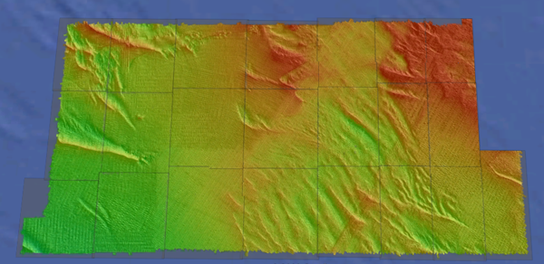
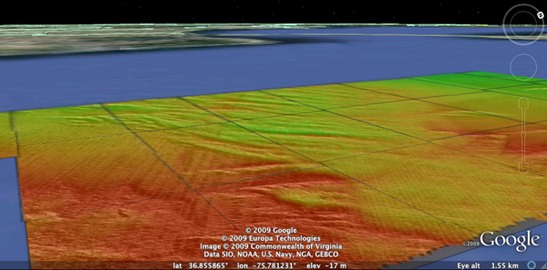
12.08.2009 09:07
wget to pull BAGs
Try as I might, I wasn't able to get
wget to do what I want on its own. I wanted it to walk the NGDC
Hydrographic survey directory and pull all of the BAGs for the Demo
next week. I thought this should work great, but it doesn't. It
does not pull the BAGs and it does not seem to respect the no
parent flag
If anyone has a suggestion about what I did wrong in the above command, please let me know!
This does work, but only for one survey:
NOTE: We would have rather used rsync if we had more time. In the past, I have setup rsync with NGDC to send data there way. Rsync is definitely lower overhead for this kind of thing (and less quirky).
wget -l10 -I /mgg/NOS/coast/H10001-H12000 \
-X "/mgg/NOS/coast/H10001-H12000/H10*"
--no-parent -nH --cut-dirs=3 -A.bag.gz -c -r
http://surveys.ngdc.noaa.gov/mgg/NOS/coast/H10001-H12000/
The "-l10" says to recurse down up to 10 levels. Is this from "/"
or from the starting location? The -I says to include this
directory, while -X says to exclude some older surveys that do not
have BAGs. The --no-parent option tries to prevent wget from
looking up the tree. It did not seem to be working, so that is why
I have the -I include flag. The -nH removes the ngdc host name,
while --cur-dirs removes the "mgg/NOS/coast". "-c" says to continue
on files that have only been partially downloaded and "-r" is
recursive through the structure.If anyone has a suggestion about what I did wrong in the above command, please let me know!
This does work, but only for one survey:
wget --no-parent -nH --cut-dirs=3 --accept bag.gz,BAG -c -r \
http://surveys.ngdc.noaa.gov/mgg/NOS/coast/H10001-H12000/H11580/
It is faily easy to combine this with python to pull a range of
surveys:
#!/usr/bin/env python
import os
for i in range(11500,11510):
cmd = 'wget -c --no-parent -nH --cut-dirs=3 --accept bag.gz,BAG -c -r http://surveys.ngdc.noaa.gov/mgg/NOS/coast/H10001-H12000/H{surveynum}/'.format(surveynum=i)
os.system(cmd)
Just be prepaired to have enough disk space.NOTE: We would have rather used rsync if we had more time. In the past, I have setup rsync with NGDC to send data there way. Rsync is definitely lower overhead for this kind of thing (and less quirky).
12.07.2009 12:58
gdal to google earth for bags
I've got the whole process down now
for going from a BAG to Google Earth. I am now using GDAL,
ImageMagick, and libgeotiff. In past blog posts, I had created
three base GeoTiffs (data, hillshade and colored) and a blend file
from ImageMagick. The blend file lost its georeferencing. I tried
to use the -g option of geotifcp, but kept getting "Failure in
GTIFImport" errors. Turns out to work if I use an ESRI World file.
One warning: the resulting geotif will not know what spatial
reference system (srs) that it is in.
Step zero was to fix libgeotiff in fink. The version in fink (1.2.5) does something wrong in setting up the programs and they will not run. I have packaged 1.3.0b1, which mostly seems to work for me. libgeotiff.info
Update 2009-Dec-09: Baba fixed libgeotiff so that it is working again in fink.
First create the world file:
Step zero was to fix libgeotiff in fink. The version in fink (1.2.5) does something wrong in setting up the programs and they will not run. I have packaged 1.3.0b1, which mostly seems to work for me. libgeotiff.info
Update 2009-Dec-09: Baba fixed libgeotiff so that it is working again in fink.
First create the world file:
listgeo -tfw H11657_1of5_1m_Final_Depth.tifNow create the nice product that we will want to tile in google earth:
geotifcp -e H11657_1of5_1m_Final_Depth.tfw H11657-1of5-blend.tif H11657-1of5.tifNow tile the results and make a KML for Google Earth:
gdal2tiles.py26 -k H11657-1of5.tif -s EPSG:4326 open H11657-1of5/doc.kmlH11657_1of5_1m_Final-tiled.kmz
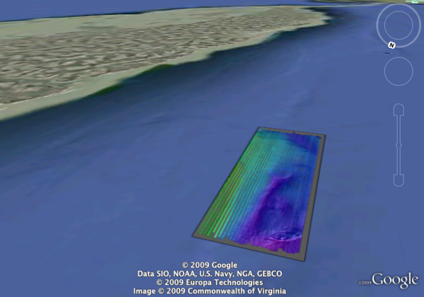
12.07.2009 10:09
GDAL gdaldem color and shaded relief
I am working towards the final
product. I want a colored shaded relief image of the terrain to
splat on Google Earth using gdal. I started out doing the
hillshade:
Opening the image in Photoshop, it looks just fine:
Then I needed the colored version, but I needed to create the color ramp. I know that gmt does a nice job with it's default grd2cpt:
I then pulled the two layers into photoshop and made the color be partially tranparent.
Better yet, is to combine them using ImageMagick's composite command:
Better results come with using the blend option rather than the multiply:
~/local/bin/gdaldem hillshade H11657_1of5_1m_Final_Depth.grd hillshade.tif open hillshade.tifUnfortunetly, Apple's Preview mangles the large grayscale image:
Opening the image in Photoshop, it looks just fine:
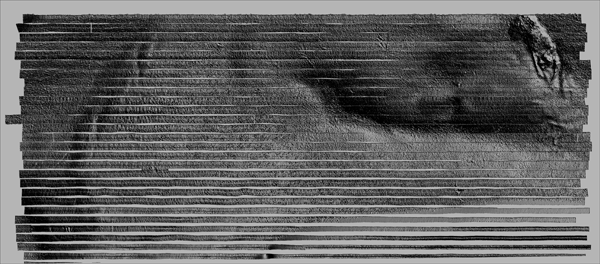
Then I needed the colored version, but I needed to create the color ramp. I know that gmt does a nice job with it's default grd2cpt:
grd2cpt H11657_1of5_1m_Final_Depth.grd # cpt file created by: grd2cpt H11657_1of5_1m_Final_Depth.grd #COLOR_MODEL = +HSV # -18.7246704102 285 1 1 -18.6818471085 285 1 1 -18.6818471085 255 1 1 -15.7773623013 255 1 1 -15.7773623013 225 1 1 -13.6830275878 225 1 1 -13.6830275878 195 1 1 -11.8935142402 195 1 1 -11.8935142402 165 1 1 -10.2208589862 165 1 1 -10.2208589862 135 1 1 -8.54820373221 135 1 1 -8.54820373221 105 1 1 -6.75869038467 105 1 1 -6.75869038467 75 1 1 -4.66435567113 75 1 1 -4.66435567113 45 1 1 -1.75987086396 45 1 1 -1.75987086396 15 1 1 0 15 1 1 B 0 0 0 F 0 0 1 N 0 0 0.501960784314However, gdaldem needs RGB colors. I wrote this little python script to convert the cpt to RGB:
#!/usr/bin/env python
import colorsys
def cpt2rgb(h,s,v):
'input in cpt style... h 0..255 s and v 0.0 to 1.0'
h = fields[1] / 360.
s = fields[2]
v = fields[3]
rgb = colorsys.hsv_to_rgb(h,s,v)
return [int(color*255) for color in rgb]
colors = []
for line in file('cpt'):
if line[0] in ('#','B','N','F'):
continue
fields = [float(field) for field in line.split()]
colors.append( cpt2rgb (*fields[1:4]) )
for i,color in enumerate(colors):
color = (int(float(i)/len(colors)*100), ) + tuple(color)
print '%d%% %3d %3d %3d' % color
print 'nv 0 0 0'
Running that gives me a percent ramp that I can use on any bathy
file:
./cpt2gdal.py 0% 191 0 255 10% 63 0 255 20% 0 63 255 30% 0 191 255 40% 0 255 191 50% 0 255 63 60% 63 255 0 70% 191 255 0 80% 255 191 0 90% 255 63 0 nv 0 0 0I am now ready to create the color file:
~/local/bin/gdaldem color-relief H11657_1of5_1m_Final_Depth.grd ramp.txt colored.tif
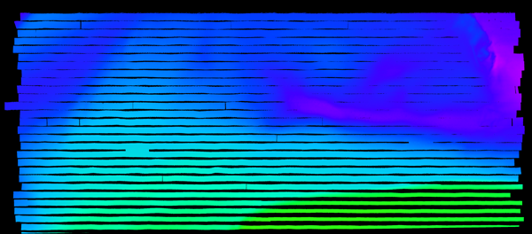
I then pulled the two layers into photoshop and made the color be partially tranparent.
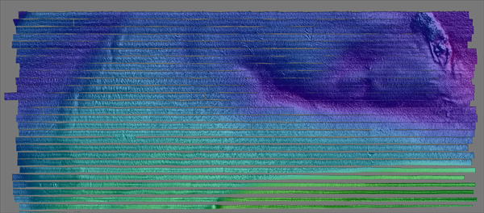
Better yet, is to combine them using ImageMagick's composite command:
composite -compose multiply gdal-colored.png gdal-hillshade.png composite-colored-and-shaded.png
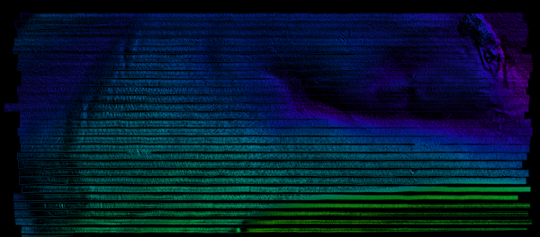
Better results come with using the blend option rather than the multiply:
composite -blend 50 gdal-colored.png gdal-hillshade.png composite-blend.png
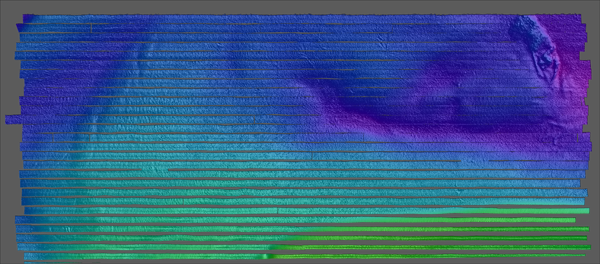
12.06.2009 07:47
First snow of winter 2009-2010
We finally got our first snow that
stuck on the ground for this winter.
12.05.2009 20:33
SAIS makes Slashdot
ISS Can Now Watch Sea Traffic From Space [slashdot] links to
SAIS on
ESA
My S-AIS Delicious Bookmarks
My S-AIS Delicious Bookmarks
12.03.2009 22:36
BAG to Google Earth using GDAL
With help from FrankW and EvenR on
the GDAL IRC channel, I now have the beginnings of my workflow to
convert a large number of BAGs (Bathymetry Attributed Grids) to a
Google Earth Visualization. Frank's BAG reader definitely gets the
job done. Here is how I've been going so far. This is based on gdal
1.6.4svn. I checked out the source from svn on my mac and setup
fink:
I then created and SD, and loaded it up in Fledermaus. I made a GeoTiff MapSheet (under Tools). In DMagic, I loaded it back in and right clicked the GeoTiff and make a Google Earth file... success! Fledermaus / DMagic can directly read BAG's and do the right thing, but the point is to develop a preview mode in Google Earth that I can put up on the web so that people can more easily get at the BAGs. I want to automate the process of creating the Google Earth preview and a popup that lets you download the BAG so that you can use it in Fledermaus.
H11657_1of5_1m_Final_Depth_sd.kmz
svn checkout https://svn.osgeo.org/gdal/trunk/gdal gdal fink remove --recursive gdal gdal-dev fink install gmt hdf5I then configured it like this:
./configure --with-hdf5=/sw --with-libz=/sw --without-perl \ --without-python --prefix=/Users/schwehr/local LDFLAGS=-L/sw/lib \ CC=/sw/bin/gcc-4 CXX=/sw/bin/g++-4 -target=i386-apple-darwin10.2.0 \ --with-proj4=/sw --with-static-proj4=/sw --without-ogr make -j 2 make installThe first step is to warp the BAG from UTM to Geographic. The default is to convert to a geotiff. That works, but we need to bump up the Z values to floats to capture the precision of the depth soundings. Note that gdalwarp can not go directly to many formats: Why won't gdalwarp or gdal_merge write to most formats?. That's why I warp and then translate to get to a GMT grid.
~/local/bin/gdalwarp -ot Float32 -t_srs EPSG:4326 H11657_1of5_1m_Final_Depth.bag H11657_1of5_1m_Final_Depth.tif Creating output file that is 2292P x 5212L. Processing input file H11657_1of5_1m_Final_Depth.bag. Using internal nodata values (eg. 1e+06) for image H11657_1of5_1m_Final_Depth.bag. 0...10...20...30...40...50...60...70...80...90...100 - done.Using gdal info shows us that this geotif makes sense:
~/local/bin/gdalinfo H11657_1of5_1m_Final_Depth.tif
Driver: GTiff/GeoTIFF
Files: H11657_1of5_1m_Final_Depth.tif
Size is 2292, 5212
Coordinate System is:
GEOGCS["WGS 84",
DATUM["WGS_1984",
SPHEROID["WGS 84",6378137,298.257223563,
AUTHORITY["EPSG","7030"]],
AUTHORITY["EPSG","6326"]],
PRIMEM["Greenwich",0],
UNIT["degree",0.0174532925199433],
AUTHORITY["EPSG","4326"]]
Origin = (-76.052723696313151,37.621900224152917)
Pixel Size = (0.000009296811983,-0.000009296811983)
Metadata:
AREA_OR_POINT=Area
Image Structure Metadata:
INTERLEAVE=PIXEL
Corner Coordinates:
Upper Left ( -76.0527237, 37.6219002) ( 76d 3'9.81"W, 37d37'18.84"N)
Lower Left ( -76.0527237, 37.5734452) ( 76d 3'9.81"W, 37d34'24.40"N)
Upper Right ( -76.0314154, 37.6219002) ( 76d 1'53.10"W, 37d37'18.84"N)
Lower Right ( -76.0314154, 37.5734452) ( 76d 1'53.10"W, 37d34'24.40"N)
Center ( -76.0420695, 37.5976727) ( 76d 2'31.45"W, 37d35'51.62"N)
Band 1 Block=2292x1 Type=Float32, ColorInterp=Gray
Band 2 Block=2292x1 Type=Float32, ColorInterp=Undefined
Now get the GeoTiff to a GMT GRD:
~/local/bin/gdal_translate -b 1 -of GMT H11657_1of5_1m_Final_Depth.tif H11657_1of5_1m_Final_Depth.grdGDAL writes old style grid files, which still works just fine.
grdinfo H11657_1of5_1m_Final_Depth.grd H11657_1of5_1m_Final_Depth.grd: Title: H11657_1of5_1m_Final_Depth.grd: Command: H11657_1of5_1m_Final_Depth.grd: Remark: H11657_1of5_1m_Final_Depth.grd: Pixel node registration used H11657_1of5_1m_Final_Depth.grd: Grid file format: cf (# 10) GMT netCDF format (float) (deprecated) H11657_1of5_1m_Final_Depth.grd: x_min: -76.0527236963 x_max: -76.0314154032 x_inc: 9.29681198274e-06 name: meters nx: 2292 H11657_1of5_1m_Final_Depth.grd: y_min: 37.5734452401 y_max: 37.6219002242 y_inc: 9.29681198274e-06 name: meters ny: 5212 H11657_1of5_1m_Final_Depth.grd: z_min: -18.7246704102 z_max: 0 name: meters H11657_1of5_1m_Final_Depth.grd: scale_factor: 1 add_offset: 0To make sure things were doing what I expected, I loaded the data into DMagic.
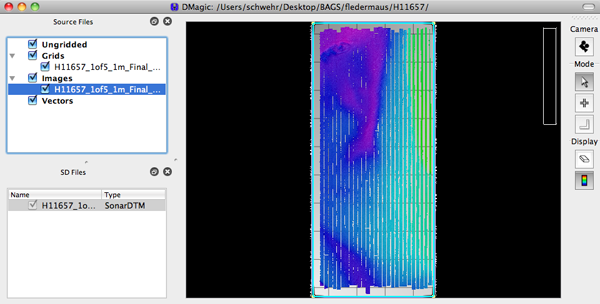
I then created and SD, and loaded it up in Fledermaus. I made a GeoTiff MapSheet (under Tools). In DMagic, I loaded it back in and right clicked the GeoTiff and make a Google Earth file... success! Fledermaus / DMagic can directly read BAG's and do the right thing, but the point is to develop a preview mode in Google Earth that I can put up on the web so that people can more easily get at the BAGs. I want to automate the process of creating the Google Earth preview and a popup that lets you download the BAG so that you can use it in Fledermaus.
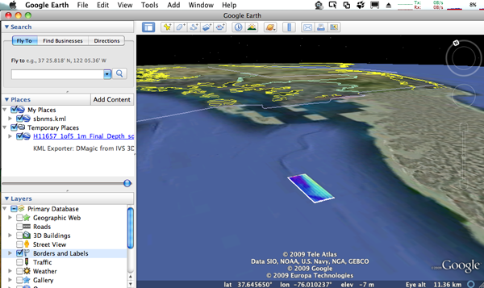
H11657_1of5_1m_Final_Depth_sd.kmz
12.03.2009 21:16
eNavigation 2009 presentations
The eNavigation 2009 conference just
put up this years
presentations.
Of particular note for me are things that I had some part of:
Irene Gonin of the USCG RDC gave USCG AIS Transmit Research and Development. This talk includes the Right Whale AIS Project.
Darren Wright followed up with PORTS Data over AIS
There were lots of other really interesting presentations, but the interest to others will likely depend on their jobs.
Image credit: Jorge Viso
Of particular note for me are things that I had some part of:
Irene Gonin of the USCG RDC gave USCG AIS Transmit Research and Development. This talk includes the Right Whale AIS Project.
Darren Wright followed up with PORTS Data over AIS
There were lots of other really interesting presentations, but the interest to others will likely depend on their jobs.
Image credit: Jorge Viso
12.03.2009 12:53
Gubinator Arnold Schwarzenegger's Google Tour
This is a very well done Google Earth
Tour: CalAdapt
- Visualizing Climate Change Risk and Adaptation Options in
California CATour.kmz
Lots more similar videos on YouTube: EarthOutreach
Lots more similar videos on YouTube: EarthOutreach
12.02.2009 13:44
gdal has BAG support
I just gave gdal (svn as of today) a
spin with its new Bathymetry Attributed Grid (BAG) support. I will
be following up with more, but this is a good beginning. Note that
gdal 1.6.3 does not include BAG support. Thanks to Howard Butler
(hobu) for some quick fixups that got me up and running.
gdalinfo H11657_1of5_1m_Final_Depth.bag
Driver: BAG/Bathymetry Attributed Grid
Files: H11657_1of5_1m_Final_Depth.bag
Size is 1822, 5357
Coordinate System is:
PROJCS["UTM Zone 18, Northern Hemisphere",
GEOGCS["NAD83",
DATUM["North_American_Datum_1983",
SPHEROID["GRS 1980",6378137,298.257222101,
AUTHORITY["EPSG","7019"]],
TOWGS84[0,0,0,0,0,0,0],
AUTHORITY["EPSG","6269"]],
PRIMEM["Greenwich",0,
AUTHORITY["EPSG","8901"]],
UNIT["degree",0.0174532925199433,
AUTHORITY["EPSG","9108"]],
AUTHORITY["EPSG","4269"]],
PROJECTION["Transverse_Mercator"],
PARAMETER["latitude_of_origin",0],
PARAMETER["central_meridian",-75],
PARAMETER["scale_factor",0.9996],
PARAMETER["false_easting",500000],
PARAMETER["false_northing",0],
UNIT["Meter",1]]
Origin = (407099.580000000016298,4164366.200000000186265)
Pixel Size = (1.000000000000000,-1.000000000000000)
Metadata:
BagVersion=1.0.0
Corner Coordinates:
Upper Left ( 407099.580, 4164366.200)
Lower Left ( 407099.580, 4159009.200)
Upper Right ( 408921.580, 4164366.200)
Lower Right ( 408921.580, 4159009.200)
Center ( 408010.580, 4161687.700)
Band 1 Block=1822x1 Type=Float32, ColorInterp=Undefined
Description = elevation
Min=-18.725 Max=-7.728
NoData Value=1000000
Band 2 Block=1822x1 Type=Float32, ColorInterp=Undefined
Description = uncertainty
Min=0.256 Max=0.557
NoData Value=0
Note that I have just updated gdal in fink to 1.6.3. This does NOT
include the bag support. For some reason, I had to add
"--without-perl" to get gdal to build in fink for 10.6.12.01.2009 20:52
Possible 3DConnexion driver crash for the Mac
I installed the 3DConnexion driver
for my SpaceMouse PE this morning, and since I have had two crashes
of my Mac. This is the same Mac that was seriously sick until
recently. I have uninstalled the kernel driver by running:
Before that, I did a little looking around and figured out how to find and list the contents of a Mac OSX package:
open /Applications/Utilities/Uninstall\ 3Dconnexion\ Driver.appIf this is really the case, then it's likely the Verizon and 3Dconnexion drivers that were making my mac sick before? This one many areas where Linux seriously kicks Darwin/MacOSX's butt.
Before that, I did a little looking around and figured out how to find and list the contents of a Mac OSX package:
pkgutil --packages | grep -i 3dconn com.3dconnexion.driver.installer com.3dconnexion.plugins.installer
pkgutil --files com.3dconnexion.driver.installer | grep System System System/Library System/Library/Extensions System/Library/Extensions/3Dconnexion.kext System/Library/Extensions/3Dconnexion.kext/Contents System/Library/Extensions/3Dconnexion.kext/Contents/Info.plist System/Library/Extensions/3Dconnexion.kext/Contents/MacOS System/Library/Extensions/3Dconnexion.kext/Contents/MacOS/3Dconnexion System/Library/Extensions/3Dconnexion.kext/Contents/Resources System/Library/Extensions/3Dconnexion.kext/Contents/Resources/English.lproj System/Library/Extensions/3Dconnexion.kext/Contents/Resources/English.lproj/InfoPlist.strings
12.01.2009 08:51
Definitions of Marine Spatial Planning
There are a number of definitions of
Marine Spatial Planning (MSP) floating around. Some of them are
pretty narrow. Here is one that we really like.
Marine Spatial Planning Pilot, Final Report, MSPP Consorium, February 2006, p. 1, section 1.2:
Marine Spatial Planning Pilot, Final Report, MSPP Consorium, February 2006, p. 1, section 1.2:
An integrated, policy-based approach to the regulation, management and protection of the marine enviornment, including the allocation of space, that addresses the multiple, cumulative and potentially conflicting uses of the sea and thereby facilitates sustainable development.My Marine Spatial Planning bookmarks on Delicious.
12.01.2009 07:21
Dale's Healy Multibeam Replacement Photos
Healy Multibeam
Replacement Photos or the direct link: Healy Multibeam
Replacement (2009-10). These are from the Healy Ice Breaker in
dry dock as they replace the multibeam sonar. The image quality of
his pictures is much better than my iPhone camera.
Note: Image withheld by request
Note: Image withheld by request
12.01.2009 06:56
GPSD 2.90 to have AIS Decoding
This morning, Eric S. Raymond wrote:
It's been a long slog, but GPSD 2.90 will finally release on 4 Dec 2009 - with the new JSON-based protocol and with full AIS decoding support. This means your applications will be able to run GPSD to collect data from any number of GPS and AIS devices and get the reports from all of them over TCP/IP port 2947 in self-describing JSON. The release will, as usual, provide client-side service libraries in C, C++ and Python which will unpack the JSON into native data structures for you. Last-minute thanks to Peter Stoyanov and the other folks at AIS Hub; they helped me put the finishing polish on the GPSD AIS decoder by providing a steady feed of some of the rarer sentences. Those of you looking for regression-test data for your decoders should definitely join their sharing pool. Kurt Schwehr, thank you too. You provided invaluable advice and test data during the GPSD AIS decoder's early gestation. You also added tremendous value to the "AIVDM/AIVDO protocol decoding" document; everyone who uses it in the future is going to owe you.My python based noaadata AIS has always been about AIS research. If you are using my code, you may want to switch to GPSD with this up coming release.